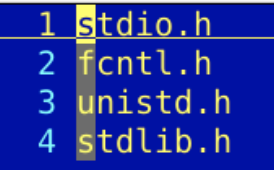
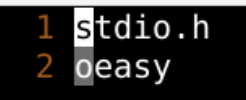
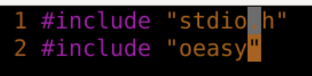
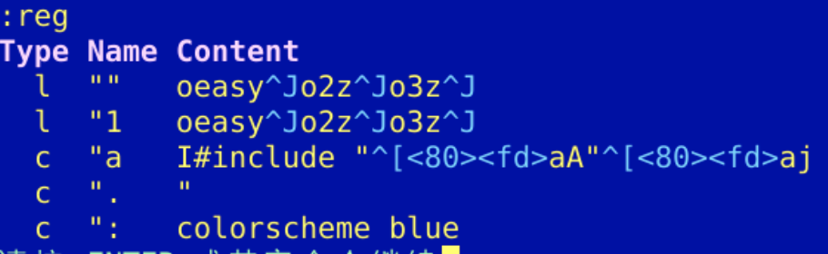
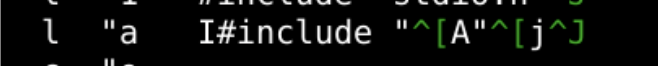
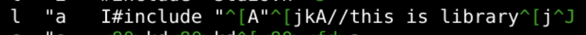
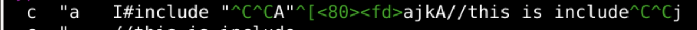

宏 macro
回忆
- 这次我们了解了编码格式
- 屏幕显示的encoding
- 文件保存的fileencoding
- 不能搞乱了
- 一般用什么编的就用什么解
- 解铃还须系铃人
- 打开不正确的话，就要切到正确的上面
- 保存成任何自己想要的编码方式
- vim还有什么能帮助我们快速操作的方法么？🤔
建立环境

录制宏macro
- 这个记录中 @a 就录制进了vim的宏库
- 可以随时调用录制完成的宏
- 比如
- I#include "
-
q
-
划重点
- 录制了宏之后怎么应用呢？
应用宏macro @
- @a
- 2@a
- uuuu
-
4@a
-
划重点
- 我们做一个复杂点的
复杂的宏
-
I#inclcude "^[A"^[j
- I#include " 在行头插入引用头
^[就是esc 从插入模式到正常模式- A" 在结尾处插入引号
^[就是esc 从插入模式到正常模式- j跳转到下一行
-
然后来两行.h的库


查看宏macro

- "a寄存器里面就是macro宏a的内容
- 不过好像这里面可以进行修改
修改宏macro
- 到最底下找一个空地
- "ap把a寄存器里面的东西粘贴出来
- 进行修改
"byy
- 一路u撤销到一个合适的位置
@b
3@b
宏的直接赋值
:let @z = @a - 这样就可以直接把a寄存器里面的东西直接给z寄存器
- 也就相当于宏的赋值
:reg也可以看到宏z赋值之后的状态
追加寄存器

- qA
- kA//this is lib.^[jq
- k 向上一行
- A 在本行尾部追加
- //this is lib 写下注释
- ^[ 退出插入模式
- j 向下一行
- q结束录制
- 追加的内容会追加到a宏里面

优化宏

- 可以先粘贴出来然后修改
- 最后再复制到a寄存器
- 相当于优化了宏
总结
- 关于宏，这次有4个要点
- qa 开始录制宏
- q 结束录制宏
- @a 应用宏
- qA 追加录制宏
- 甚至可以编辑宏
- "ap 把宏作为文本粘贴出来
- 编辑之后
- "ayy把新的宏装在进入a寄存器reg
- 这个宏还可以怎么玩呢？🤔
- 下次再说！